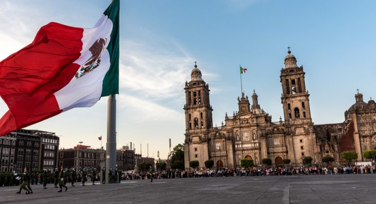
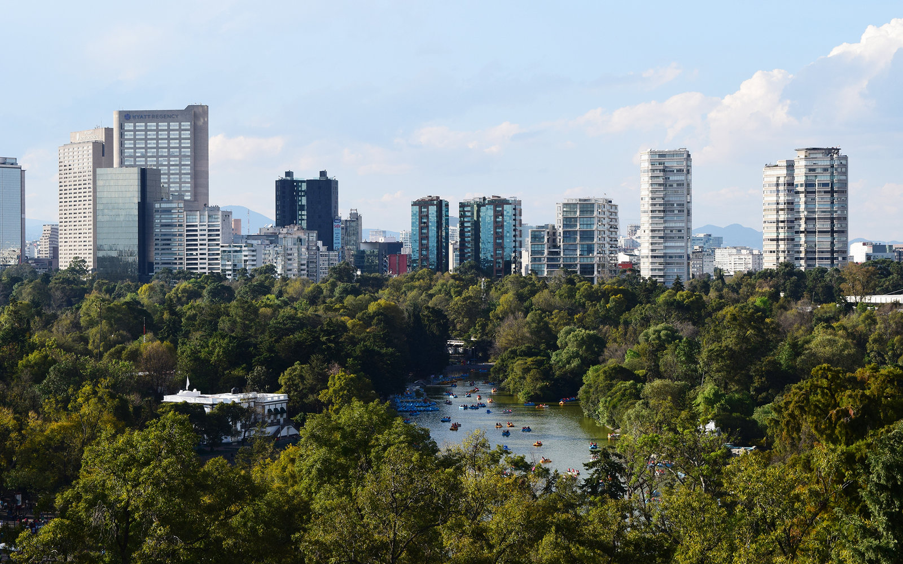
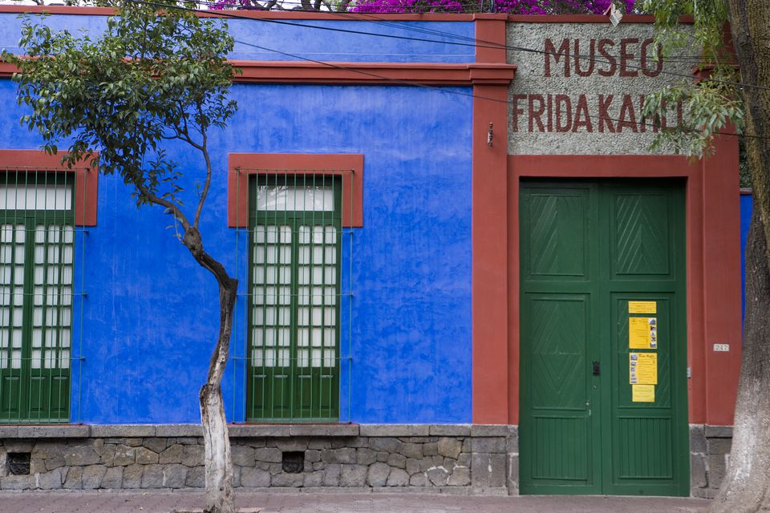
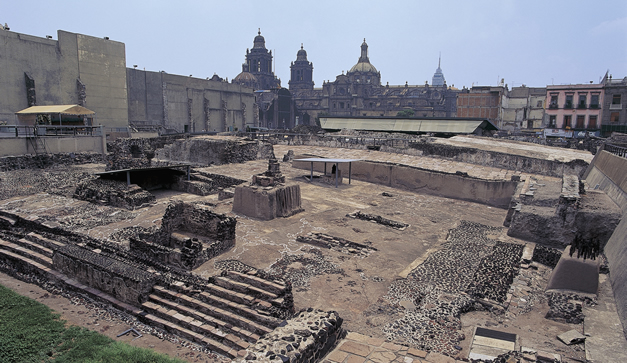

Mexico City Travel Guide
Things to do
- Centro Histórico: City of Palaces 
- Bosque de Chapultepec 
- Frida Kahlo Museum 
- Templo Mayor Museum 
The Aztecs built their empire on Lake Texcoco in the Valley of Mexico—a great island city connected by canals and protected by fortresses. When Spanish conquerors arrived in Tenochtitlan in the 16th century, they destroyed the island, drained the lake, and constructed a “city of palaces” over the ruins. Past and present blend together in the 10-acre Historic Center of Mexico City—its museums, cathedrals, and temples reveal a storied past. The Zócalo, the city’s main public square, is second largest in the world after Moscow’s Red Square and within a short distance of several significant sites. Highlights include the Palacio Nacional, home to the president’s offices. The colonial building is located at the site where the palace of the Aztec ruler Moctezuma once stood, and it’s decorated with murals by Mexican artist Diego Rivera. The Mexico City Metropolitan Cathedral, built over a period of more than 200 years, is the largest in the Americas and combines Renaissance, baroque, and neoclassical architectural styles.
It is often compared to New York's Central Park, but at more than 1,600 acres, Mexico City's Bosque Chapultepec is double in size and, some would argue, offers far more to keep visitors entertained. There's a zoo, multiple museums, a botanical garden, a recreational lake, monuments to Mexican patriots and international heroes, plenty of photo ops, and even an archaeological site, Montezuma's Baths. There are snack vendors, street performers, and souvenir sellers, too. It's impossible to take it all in, but spending an afternoon in the park gives visitors plenty to do and see. The park is particularly popular with locals on weekends.
The Frida Kahlo Museum, also known as the Blue House for the structure's cobalt-blue walls, is a historic house museum and art museum dedicated to the life and work of Mexican artist Frida Kahlo. It is located in the Colonia del Carmen neighborhood of Coyoacán in Mexico City.The building was Kahlo's birthplace and is also the home where she grew up, lived with her husband Diego Rivera for a number of years, and, in a room on the upper floor, would die.
The ruins of the former Aztec Capital of Tenochtitlan, now houses a museum that showcases the ruins of the former capital and all the artifacts that was found during its excavation. Food for thought: It is said that during the Spanish Reconquista the Spanish would build churches and cathedrals on top of the destroyed Mesoamerican temple to show their power over the natives and their religion's strength (Catholicisim) thus why the Catedral Metropolitana is right beside the ruins of Tenochtitlan.